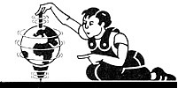

Bits And Pieces
News briefs on chemical accidents, the human-powered speed record, police surveillance tools, fast food guide, tropical tragedy, petrels and petroleum and others.
By the Mother Earth News editors
September/October 1986
Shades of Compassion
Sea turtles in Brevard County, Florida, are safer now, thanks to an ordinance requiring beach-facing windows in new condominiums to be covered with window film or shade screens. The area's beaches are a favored nesting habitat of the 80-million-year-old endangered species, and nighttime light from condo windows and other sources disoriented sea turtle hatchlings, drawing them inland onto Highway A1A. Dr. Ross McCluney of the Florida Solar Energy Center, who recommended the ordinance, says that condo residents not only are saving sea turtles by shading their windows, but are lowering their air-conditioning costs, as well.
Chemical Accidents
An Environmental Protection Agency study says that nearly 7,000 accidents involving the release of 420 million pounds of toxic chemicals occurred in this country between 1980 and 1985. The accidents killed 139 people, injured 1,478, and caused the evacuation of some 217,000. Chlorine was cited as the chemical responsible for the greatest number of deaths and injuries. Perhaps most disturbing are the figures concerning the causes of the accidents: Although 13% of the mishaps are attributed to human error, the causes of 40% are simply unknown.
Human-Powered Speed Record
Last May 11, former Olympic cyclist Fred Markham pedaled the 31-pound bicycle Gold Rush to an astonishing record speed of 65.48 mph. In the process, he and Gardner Martin, designer of the bicycle, won the $18,000 DuPont Prize, which had been offered since January 1984 for the first single-rider, human-powered vehicle to exceed 65 mph on level ground, unaided by wind or other vehicles. Computer modeling had suggested a theoretical top speed for a human-powered vehicle to be between 65 and 70 mph, but most experts considered such a speed simply impossible. The Gold Rush, which looks much like the front section of a very skinny supersonic jet, is a recumbent ("sit back") bicycle enclosed in an aerodynamic fairing made of superlightweight Kevlar aramid fabric.
Shades of Big Brother
A computerized video "cop" capable of scanning license plates on cars at highway speeds and then automatically checking the numbers against a stored list of stolen or "suspect" vehicle numbers may soon be available to police forces. Previous versions of such systems have been too expensive and inaccurate for practical use-but the new design can recognize target numbers 65% to 95% of the time, and is said to be relatively inexpensive.
Sun Down
Recent studies show that the sun's irradiance has decreased by almost .02% each year over the past five years. The change may be a result of the sun's 22-year magnetic cycle, or symptomatic of the gradual expansion of the sun, which scientists say has grown by about 100 kilometers in the last several years. The cause, however, is less a matter of concern than is the possible effect on our climate. At the current rate, light from the sun could decline .2% per decade. According to the National Center for Atmospheric Research, a decrease in sunlight of only 1% is thought to have brought on Europe's "Little Ice Age," which lasted from 1500 to 1850.
Less Time, Too
If it seems that you don't have quite as much time to get things done in a day as you used to, you're right - and you're also extraordinarily clock-sensitive. According to a report in International Wildlife magazine, the powerful winds created in 1983 by the weather phenomenon known as El Niño actually speeded up the earth's spin. Result: Each day is shorter . . . by about 3/1,000 of a second.
Air and Error
The emissions control systems in 22% of the motor vehicles in a recent EPA survey had been tampered with, says a report issued by the agency. In addition, the drivers of 14% of the cars and light trucks surveyed were running their vehicles on leaded fuel even though the models required unleaded gas. The unfortunate result of this "innocent" cheating, of course, will show up sooner or later . . . in the air we and our children breathe.
Fast Food Guide
The Center for Science in the Public Interest's new "Fast Food Eating Guide" poster is a real eye opener . . . and perhaps a lifesaver, too. The colorful 18" X 24" broadside lists the calorie, fat, and sodium content of over 200 items from the menus of major fast-food restaurants from Arby's to Wendy's. Also listed for each item is CSPI's "Gloom Index" rating, which reflects a food's overall value, taking into consideration both the negatives (fat, sugar, sodium, and calories) and the positives (vitamins, minerals, and protein). Not all the foods listed are "junk" foods . . . with the help of this poster, it's possible to get a fastfood meal that isn't overburdened with dietary bugaboos. The poster is available for $3.95 postpaid ($7.95 for a deluxe laminated version) from CSPI, 1501 16th St. N.W., Washington, DC 20036; 202/332-9110.
No Joke
Poland is the most polluted country in the world, according to a study by the Polish Academy of Social Sciences. Satellite photos of Europe show the largest clouds of particulates over Poland, probably because many large plants have shut down their pollution control equipment to save power. Fully 90% of the water in the country's rivers is undrinkable, and most of the water in the Vistula River, Poland's largest, is unfit even for industrial use. Fewer than half of the country's 800 cities have sewage treatment plants; even Warsaw, the capital, has no such facility.
Tropical Tragedy
According to a report issued by the Nature Conservancy, some 27 million acres of tropical rain forest are cleared every year; that's a rate of 50 acres an hour. Other estimates quote even higher figures. A recent issue of Sierra put the rate of destruction at between 25 and 100 acres per minute. Whatever the pace, the consequences are mind-boggling: At least 40% of all the world's plant and animal species inhabit such forests. Biologist Peter Raven, director of the Missouri Botanical Garden, fears that no fewer than one-fifth of the planet's species face extinction if the clearing continues.
Ironically, much of the acreage is being cleared for use as pasture and cropland, for which it is unsuitable. Typically, such land has only an inch or two of topsoil, which soon washes away after the trees are removed.
Petrels and Petroleum
Petrels - small, black, oceanic birds - can be effective monitors of marine pollution, say researchers at the University of Washington. When attacked by enemies, petrels regurgitate the contents of their stomachs . . . and the material can be analyzed for hydrocarbons and trace metals. A project in which petrels were captured in nets near an offshore oil platform in Alaska suggests that the birds can be useful in accurately detecting oil spills and other forms of ocean pollution that would otherwise go unnoticed.
|
|
 |
|
|
 |
|
|